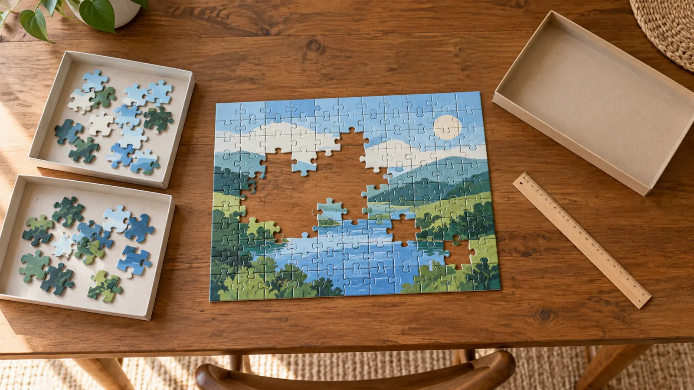

Children’s interlocking cardboard puzzle
Fits a first shared build when the exact age label, manageable image and pieces match the child. Tradeoff: a favorite picture can still hide repetitive detail or awkward handling.
AT HOME · HONEST BUYING GUIDE · AUTHORITY-EXPANSION
A 300-piece puzzle can be a small project, a huge table takeover or the wrong age label entirely. Read the exact box. The number is only one input.

Borrow a complete, age-appropriate puzzle or revisit one already owned. Spend fifteen minutes at the table you actually intend to use. Can each participant distinguish pieces, reach the working area and contribute without an adult taking over? Does the unfinished project have somewhere secure to wait when dinner needs the table?
If the old puzzle is too hard, try a small area with an obvious image feature instead of buying a bigger box as encouragement. If there is no safe storage space, a short puzzle that can be finished and boxed is usually more practical than a new board or rolling mat. A photograph of a beautiful game room does not add square footage to yours.
Our practical check is to mark a temporary paper rectangle equal to the published finished dimensions, then place the sorting trays beside it. Do not tape on a valuable table finish. Try a ten-minute reach test around that empty footprint before buying. No universal extra-inch rule fits every table or puzzle.
Ravensburger’s New Adventures of Super Mario, item 12004308, lists 300 XXL pieces, age 9+ and a 49 × 36 cm finished face. Its Seaside Sunshine, item 16437, also lists 300 pieces and age 9+, but a 70 × 50 cm finished face. Same count, substantially different table requirement.
Meanwhile Buffalo Games’ Ophelia 300 Large Piece puzzle lists ages 14+ and 21.25 × 15 inches. It is an example of why larger pieces are not permission to ignore an older age label—not a recommendation for a younger school-age child. Specifications were checked October 20, 2026; match the exact current edition. We make no stock, price, rating, quality-ranking or hands-on testing claim.
Compare distinct regions, color contrast, repeated patterns, large blank skies, gradients and how clearly the reference picture can be read. A lower-count image with nearly identical pieces across a dark area can frustrate a beginner more than a somewhat larger image with recognizable zones. That is a selection judgment, not a promise about any specific box.
Let the child choose between two adult-screened images. Explain the tradeoff honestly: “This one has obvious sections; this one has lots of similar blue.” Avoid framing an easier puzzle as baby work or a hard one as evidence of intelligence. Accessibility can mean larger pieces, better contrast, stronger task lighting or a child directing placement while an adult handles pieces.
Shallow owned trays can keep a limited set visible, provided they can be covered or put away securely. A loose blanket or improvised roll-up can shift a build; do not promise it will preserve the work. A purpose-made board must fit the actual puzzle, table, storage location and household handling limits. Check the maker’s dimensions and instructions instead of using a piece-count label as a size standard.
Keep adhesives and permanent mounting out of the first session. An ordinary jigsaw can be dismantled and reused. If preserving a finished puzzle later becomes a real need, follow the specific adhesive and backing instructions separately, with an adult controlling the materials. No glue is required to enjoy or finish tonight’s project.
The timings are our family routine, not a printed product play time. A half-built image can be a satisfactory evening if tomorrow’s dinner table and younger sibling are not left with the consequences.
The CPSC’s toy guidance says to follow package ages and safety information and keep small-part toys away from children under three. Check current recalls by exact brand and product, including secondhand copies. A school-age child’s box does not make the surrounding room appropriate for a toddler.
Skip an untraceable marketplace listing with no clear maker, age label, dimensions or warnings. Skip an incomplete used set presented as complete. Do not substitute magnetic, battery-powered or three-dimensional kits under the assumption they have the same hazards and instructions as cardboard jigsaws. Do not buy a thousand-piece project to force patience or treat a developmental concern.
Rain makes the table available, not the child’s attention unlimited. The low-energy version is ten minutes sorting one recognizable region with a willing adult, followed by full cleanup. If small parts cannot be secured or nobody wants to puzzle, use the living-room picnic or household sound lab instead.
For turn-taking competition or cooperation, the board-game guide answers a different buying question. The calendar reset can protect a real second session; the travel-game guide covers constrained moving-day play. Do not pack a loose home jigsaw simply because it worked on the dining table.
Reviewed October 20, 2026 by Mr Adventure Dad Editorial Desk using the linked manufacturer specifications and CPSC guidance. The workspace card, category tradeoffs and session plan are original editorial frameworks, not product tests or learning-outcome claims. The generic illustration is not any named example. Report sourced corrections through About. No accessory is required and no commission rate influenced selection.
MAKE THE WEEK COUNT
Build the plan your family can finish well, then leave enough energy for the next part of the day.
More family plansTHE USEFUL STUFF
These are practical categories to compare—not a reason to overpack. Check fit, specifications and current reviews before buying.
Paid links: As an Amazon Associate I earn from qualifying purchases. You pay no additional cost.
Match the exact age label, warnings, image detail, grip and assembled dimensions to the child and usable workspace—not piece count alone.
See current options → COMPARE ON AMAZONCheck the actual age label and finished dimensions. Larger pieces do not automatically mean approval for younger children or a smaller table.
See current options → COMPARE ON AMAZONCompare the exact edition’s age guidance, image complexity, finished width and height, missing-piece route and secure pause/storage needs.
See current options →